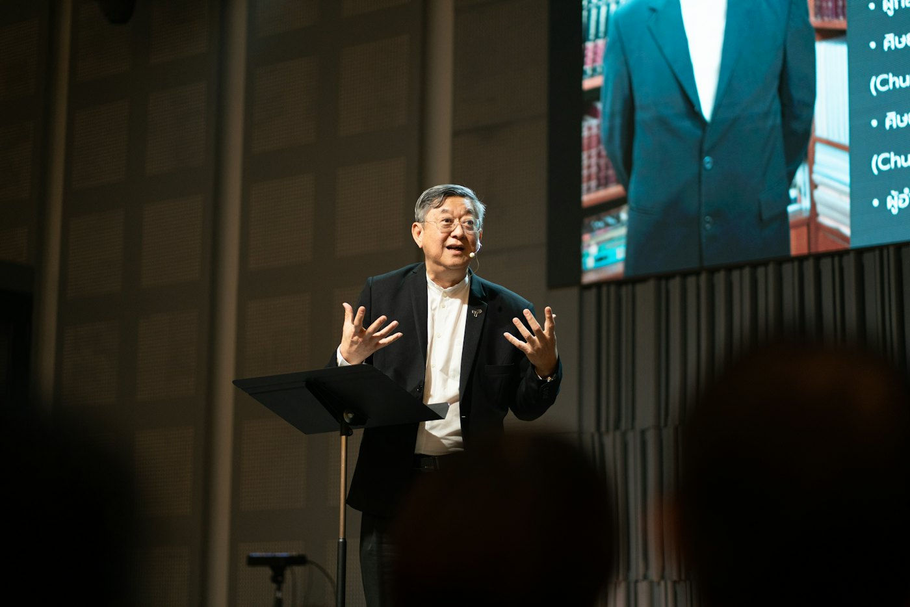
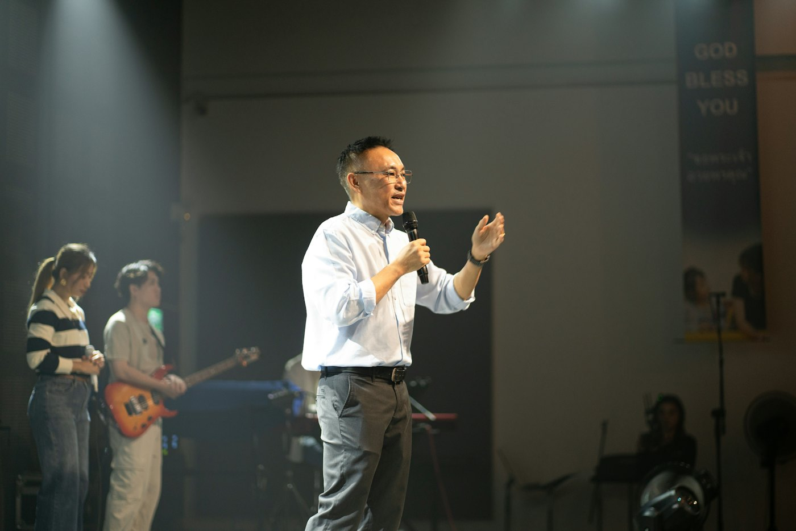

Thumbnails
A thumbnail system with three color modes, so the feed looks varied but still belongs together. Short words, a face, one bold highlight. Every thumbnail is tested at phone size before it goes up.
 Why does God wait?38:12
Why does God wait?38:12
Stop saying "I'm fine"0:47
The worst prayer ever0:52